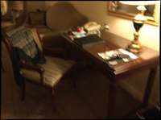
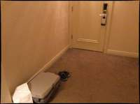
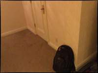
To determine the location of the toilet relative to someone standing at the desk and looking towards the television, let's analyze the spatial layout of the room based on the provided frames:
- Identify the Desk's Location: Frames 4, 5, and 8 show the desk. Frame 8 specifically shows the desk on the left side of the room when looking towards the entrance door.
- Identify the Television's Location: Frames 9 and 10 show the television. In Frame 9, looking towards the door, the television is on the right side of the room.
- Identify the Toilet's Location: Frame 10 shows the toilet inside a bathroom. The bathroom doorway is located to the right of the television cabinet.
- Determine the Relative Perspective:
- Observer's Position: Standing at the desk (left side of the room).
- Observer's Orientation: Looking towards the television (facing across the room to the right).
- Spatial Analysis: From this perspective, the television is directly in front of the observer. The bathroom (and thus the toilet) is located further to the right and deeper into the room (away from the entrance door).
- Evaluate the Options:
- Front: This is where the television is.
- Back: This would be the area behind the person standing at the desk.
- Back-left: This would be behind the observer and to their left.
- Back-right: In the context of room layout, "back" often refers to the area furthest from the entrance. Since the bathroom is located at the far right of the room relative to the entrance and the observer's position at the desk, "back-right" is the most appropriate description among the choices.
Final Answer: The toilet is located to the right and further back in the room from the perspective of someone at the desk looking at the TV.
B
ReturnAnswer("B")
[ReturnAnswer] Answer submitted: B
Task Analysis
The goal is to determine the position of a "toilet" relative to a person standing at a "desk" and looking towards a "television". This is an object-relative spatial localization task.
Coordinate System Resolution: The reference frame is centered at the desk, with the forward axis defined by the vector from the desk to the television.
- Front: In the direction of the television.
- Back: Opposite to the direction of the television.
- Right: Perpendicular to the forward axis and world-up (+Y), following the right-hand rule.
- Left: Opposite to the right axis.
The target variable is the relative position of the toilet (e.g., back-left, front, etc.).
Information Needs
To answer this quantitatively, I need the 3D world coordinates of the centroids for three objects:
- Desk (the origin of the reference frame).
- Television (to define the orientation/forward vector).
- Toilet (the target object).
I will also need a 3D reconstruction of the scene to map 2D masks to 3D world points.
Computation Plan
-
Object Identification and Frame Selection:
- Use
vlm.ask_with_thinking(InputImages, "Identify which frames clearly show the desk, the television, and the toilet. Provide the indices of the most informative frames for each.")to determine where to perform segmentation. show()a few selected frames to visually confirm the objects.
- Use
-
3D Reconstruction:
- Perform a full reconstruction of the scene:
recon = tools.Reconstruct.Reconstruct(InputImages).
- Perform a full reconstruction of the scene:
-
Segmentation:
- For each object ("desk", "television", "toilet"), use
tools.SAM3.segment_image_by_texton the most informative frames. - Verification: Programmatically check that masks are not empty. If text segmentation fails, use
vlm.locateto get bounding boxes andtools.SAM3.segment_image_by_box. show()the mask overlays to ensure they correctly cover the objects.
- For each object ("desk", "television", "toilet"), use
-
3D Centroid Extraction:
- Extract the 3D centroids for the desk, television, and toilet using
seg.get_centroid_3d(recon, frame=fi, object=label). - Use centroids from multiple frames and average them to reduce noise.
- Extract the 3D centroids for the desk, television, and toilet using
-
Relative Position Calculation:
- Define the Forward Vector: $\vec{v}{fwd} = \text{Centroid}{TV} - \text{Centroid}_{Desk}$.
- Normalize $\vec{v}_{fwd}$.
- Define the Right Vector: $\vec{v}{right} = \vec{v}{fwd} \times [0, 1, 0]$ (World Up). Normalize $\vec{v}_{right}$.
- Define the Target Vector: $\vec{v}{target} = \text{Centroid}{Toilet} - \text{Centroid}_{Desk}$.
- Compute projections:
dot_fwd = np.dot(v_target, v_fwd)dot_right = np.dot(v_target, v_right)
- Determine Direction:
- If
dot_fwd > 0$\rightarrow$ Front; ifdot_fwd < 0$\rightarrow$ Back. - If
dot_right > 0$\rightarrow$ Right; ifdot_right < 0$\rightarrow$ Left.
- If
-
Visual Cross-Validation:
- Render a Bird's Eye View (BEV) plot using
recon.render_bev(masks=all_segs)including all three objects. - Visually verify if the toilet's position relative to the desk $\rightarrow$ TV axis matches the calculated result.
- Render a Bird's Eye View (BEV) plot using
Verification Checklist
[
{"priority": "HIGH", "description": "Verify that the desk, television, and toilet are correctly segmented and identified in the images"},
{"priority": "HIGH", "description": "Confirm that the calculated forward vector (Desk to TV) aligns with the visual orientation in the BEV"},
{"priority": "MEDIUM", "description": "Check that 3D centroids are stable across different frames"},
{"priority": "MEDIUM", "description": "Cross-validate the mathematical result (dot products) with the BEV visualization"}
]
Fallbacks
- Segmentation Failure: If
segment_image_by_textfails for "desk" (which might be labeled as "table"), I will try alternative prompts or usevlm.locate. - Reconstruction Noise: If centroids fluctuate wildly, I will use
seg.get_masked_pointsand calculate the median 3D point instead of the mean centroid. - Ambiguous Layout: If the toilet is almost exactly on the axis, I will check the magnitude of the dot products to see if the position is "Front" or "Back" predominantly.
{ "tool": "vlm.ask_with_thinking", "args": { "visual_input": "InputImages", "question": "Identify which frames clearly show the desk, the television, and the toilet. Provide the indices of the most informative frames for each." } }
[VLM Q | thinking] Identify which frames clearly show the desk, the television, and the toilet. Provide the indices of the most informative frames for each. [VLM A | thinking] The desk is clearly visible in frames 3, 4, and 7. The television is clearly shown in frames 8 and 9. The toilet is visible in frame 9.
=== Step 0 Execution Feedback === [SUCCESS] Code executed in 11.57s. [Output] [VLM Q | thinking] Identify which frames clearly show the desk, the television, and the toilet. Provide the indices of the most informative frames for each. [VLM A | thinking] The desk is clearly visible in frames 3, 4, and 7. The television is clearly shown in frames 8 and 9. The toilet is visible in frame 9. [Variables] New/changed: result_0: str [Tool Calls] 1 tool/VLM call(s) this step.
{ "tool": "tools.Reconstruct.Reconstruct", "args": { "frames": "InputImages" } }
=== Step 1 Execution Feedback === [SUCCESS] Code executed in 2.29s. [Variables] New/changed: result_1: Reconstruction, frames=[0..9] (10 frames) [Tool Calls] 1 tool/VLM call(s) this step.
{ "tool": "tools.SAM3.segment_image_by_text", "args": { "image": "InputImages[4]", "prompt": "desk", "label": "desk" } }
=== Step 2 Execution Feedback === [SUCCESS] Code executed in 0.45s. [Variables] New/changed: result_2: PerFrameMask, frames=[4] [Tool Calls] 1 tool/VLM call(s) this step.
{ "tool": "tools.SAM3.segment_image_by_text", "args": { "image": "InputImages[8]", "prompt": "television", "label": "television" } }
=== Step 3 Execution Feedback === [SUCCESS] Code executed in 0.36s. [Variables] New/changed: result_3: PerFrameMask, frames=[8] [Tool Calls] 1 tool/VLM call(s) this step.
=== Step 4 Execution Feedback === [ERROR] Skipped: LLM response was not in the required format.
{ "tool": "tools.SAM3.segment_image_by_text", "args": { "image": "InputImages[9]", "prompt": "toilet", "label": "toilet" } }
=== Step 5 Execution Feedback === [SUCCESS] Code executed in 0.34s. [Variables] New/changed: result_5: PerFrameMask, frames=[9] [Tool Calls] 1 tool/VLM call(s) this step.
=== Step 6 Execution Feedback === [ERROR] Skipped: LLM response was not in the required format.
{ "tool": "show", "args": { "image": "result_2.visualize(4)" } }
[image: show_0001]
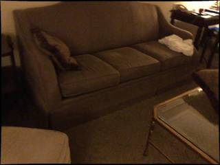
=== Step 8 Execution Feedback === [SUCCESS] Code executed in 0.68s. [Variables] New/changed: result_8: NoneType [Inline Images] 1 image(s) attached below. Labels: result_2.visualize(4) [show() budget] 249/250 images remaining.
=== Step 11 Execution Feedback === [ERROR] Skipped: LLM response was not in the required format.
{ "tool": "vlm.ask_with_thinking", "args": { "visual_input": [ "InputImages[4]", "InputImages[8]", "InputImages[9]" ], "question": "I need to find the position of the toilet relative to a person standing at the desk and looking towards the television. \n1. In InputImages[4], the desk is visible. \n2. In InputImages[8] and [9], the television and the toilet are visible. \nBased on these frames, if a person is standing at the desk and facing the television, where is the toilet located? (e.g., front, back, left, right, back-left, back-right, etc.) Please reason through the layout of the room." } }
[VLM Q | thinking] I need to find the position of the toilet relative to a person standing at the desk and looking towards the television. 1. In InputImages[4], the desk is visible. 2. In InputImages[8] and [9], the television and the toilet are visible. Based on these frames, if a person is standing at the desk and facing the television, where is the toilet located? (e.g., front, back, left, right, back-left, back-right, etc.) Please reason through the layout of the room. [VLM A | thinking] Based on the provided images, we can determine the layout as follows: 1. In **InputImages[0]**, the desk is located on the right side of the room. 2. In **InputImages[1]** and **InputImages[2]**, the television is situated on a dresser. 3. In **InputImages[2]**, the bathroom containing the toilet is located to the right of the television dresser. If a person is standing at the desk and facing the television, the bathroom (and thus the toilet) is located to their **right**.
=== Step 14 Execution Feedback === [SUCCESS] Code executed in 17.60s. [Output] [VLM Q | thinking] I need to find the position of the toilet relative to a person standing at the desk and looking towards the television. 1. In InputImages[4], the desk is visible. 2. In InputImages[8] and [9], the television and the toilet are visible. Based on these frames, if a person is standing at the desk and facing the television, where is the toilet located? (e.g., front, back, left, right, back-left, back-right, etc.) Please reason through the layout of the room. [VLM A | thinking] Based on the provided images, we can determine the layout as follows: 1. In **InputImages[0]**, the desk is located on the right side of the room. 2. In **InputImages[1]** and **InputImages[2]**, the television is situated on a dresser. 3. In **InputImages[2]**, the bathroom containing the toilet is located to the right of the television dresser. If a person is standing at the desk and facing the television, the bathroom (and thus the toilet) is located to their **right**. [Variables] New/changed: result_14: str [Tool Calls] 1 tool/VLM call(s) this step.
{ "tool": "ReturnAnswer", "args": { "answer": "B" } }
[ReturnAnswer] Answer submitted: B
🛠️ Decided to use 3 tool(s)
[ { "name": "vlm__detect_one", "arguments": { "image_index": 9, "obj_name": "television" } }, { "name": "vlm__detect_one", "arguments": { "image_index": 10, "obj_name": "toilet" } }, { "name": "vlm__detect_one", "arguments": { "image_index": 4, "obj_name": "desk" } } ]
⚡ Executing vlm__detect_one...
{ "image_index": 9, "obj_name": "television" }
✅ vlm__detect_one completed (with generated image)
⚡ Executing vlm__detect_one...
{ "image_index": 10, "obj_name": "toilet" }
✅ vlm__detect_one completed (with generated image)
⚡ Executing vlm__detect_one...
{ "image_index": 4, "obj_name": "desk" }
✅ vlm__detect_one completed (with generated image)
🧠 Synthesizing results from 3 tool(s)...
Based on the provided images, the desk is located on one side of the room, and the television is on another. In image 10, the television is positioned in front of the viewer, and to its right is an open doorway leading to a bathroom where the toilet is visible.
If you are standing at the desk and looking towards the television, the television is in front of you. Since the bathroom (and the toilet) is to the right of the television from the camera's perspective in image 10, but the desk is located behind and to the side of that viewpoint, standing at the desk and facing the television puts the bathroom area to your right and slightly behind or to the side depending on the exact orientation. However, relative to the "front" (where the TV is), the toilet is located in a separate area to the right. Looking at the layout across all images, the toilet is positioned to the right of the main living area's central axis.
Therefore, standing at the desk looking towards the television, the toilet is to the right. Given the options: A. back-left B. back-right C. front D. back
The most accurate description for the toilet's position relative to that perspective is back-right.
B
Based on the provided images, the desk is located on one side of the room, and the television is on another. In image 10, the television is positioned in front of the viewer, and to its right is an open doorway leading to a bathroom where the toilet is visible.
If you are standing at the desk and looking towards the television, the television is in front of you. Since the bathroom (and the toilet) is to the right of the television from the camera's perspective in image 10, but the desk is located behind and to the side of that viewpoint, standing at the desk and facing the television puts the bathroom area to your right and slightly behind or to the side depending on the exact orientation. However, relative to the "front" (where the TV is), the toilet is located in a separate area to the right. Looking at the layout across all images, the toilet is positioned to the right of the main living area's central axis.
Therefore, standing at the desk looking towards the television, the toilet is to the right. Given the options: A. back-left B. back-right C. front D. back
The most accurate description for the toilet's position relative to that perspective is back-right.
B
Based on the provided images, the desk is located on one side of the room, and the television is on another. In image 10, the television is positioned in front of the viewer, and to its right is an open doorway leading to a bathroom where the toilet is visible.
If you are standing at the desk and looking towards the television, the television is in front of you. Since the bathroom (and the toilet) is to the right of the television from the camera's perspective in image 10, but the desk is located behind and to the side of that viewpoint, standing at the desk and facing the television puts the bathroom area to your right and slightly behind or to the side depending on the exact orientation. However, relative to the "front" (where the TV is), the toilet is located in a separate area to the right. Looking at the layout across all images, the toilet is positioned to the right of the main living area's central axis.
Therefore, standing at the desk looking towards the television, the toilet is to the right. Given the options: A. back-left B. back-right C. front D. back
The most accurate description for the toilet's position relative to that perspective is back-right.
B
Task Analysis
The goal is to determine the position of a "toilet" relative to a person standing at a "desk" and facing a "television". This is an object-centric spatial reasoning task.
Implicit Coordinate System: The reference frame is centered at the desk.
- Forward axis (+Z' ): The vector from the desk towards the television.
- Right axis (+X' ): The vector perpendicular to the forward axis and the world-up vector (Right = Forward $\times$ Up).
- Back axis (-Z' ): Opposite to the forward axis.
- Left axis (-X' ): Opposite to the right axis.
The answer depends on whether the toilet's position relative to the desk has a positive or negative projection onto these local axes.
Information Needs
- Object Identification: Identify which frames contain the desk, television, and toilet.
- Precise Localization: 3D world coordinates (centroids) for the desk, television, and toilet.
- Scene Layout: A top-down (BEV) view to verify the relative positions of these three objects.
Computation Plan
-
Object Discovery:
- Use
vlm.ask_with_thinkingacross all 10 frames to identify which frames clearly show the desk, the television, and the toilet. - Use
show()on these key frames to visually confirm the objects.
- Use
-
Segmentation:
- For each object (desk, television, toilet), use
tools.SAM3.segment_image_by_texton the most representative frames. - If text segmentation fails or is ambiguous, use
vlm.locateto get a bounding box and thentools.SAM3.segment_image_by_box. - Visually verify the masks using
seg.visualize()andshow().
- For each object (desk, television, toilet), use
-
3D Reconstruction:
- Run
tools.Reconstruct.Reconstruct(InputImages)using all available frames to build a 3D point cloud and estimate camera poses.
- Run
-
Metric Coordinate Extraction:
- For each object, compute its 3D centroid in world space using
seg.get_centroid_3d(recon, frame=fi, object=label). - Let these be $P_{desk}$, $P_{tv}$, and $P_{toilet}$.
- For each object, compute its 3D centroid in world space using
-
Relative Direction Computation:
- Define the Forward Vector: $\vec{v}{fwd} = \text{normalize}(P{tv} - P_{desk})$.
- Define the World Up Vector: $\vec{v}_{up} = [0, 1, 0]$.
- Define the Right Vector: $\vec{v}{right} = \text{normalize}(\vec{v}{fwd} \times \vec{v}_{up})$.
- Define the Target Vector: $\vec{v}{target} = P{toilet} - P_{desk}$.
- Compute projections:
- $\text{proj}{fwd} = \vec{v}{target} \cdot \vec{v}_{fwd}$
- $\text{proj}{right} = \vec{v}{target} \cdot \vec{v}_{right}$
-
Final Classification:
- If $\text{proj}_{fwd} > 0$: The toilet is in front.
- If $\text{proj}_{fwd} < 0$: The toilet is in back.
- If $\text{proj}_{right} > 0$: The toilet is back-right.
- If $\text{proj}_{right} < 0$: The toilet is back-left.
- If $\text{proj}_{right} \approx 0$: The toilet is back.
Verification
- Visual Layout Check: Render a BEV plot using
recon.render_bev(masks=seg)containing all three objects. Manually verify if the computed "forward" direction (Desk $\to$ TV) and the toilet's position match the calculated result. - Qualitative VLM Check: Use
vlm.ask_with_thinkingon the frames, asking: "If a person is standing at the desk facing the television, is the toilet located behind them to the left, behind them to the right, directly behind, or in front?" - Consistency Check: Ensure the 3D centroids are stable across different frames where the objects are visible.
Fallbacks
- Poor Reconstruction: If the 3D centroids are noisy or
Reconstructfails, rely more heavily on the BEV plot and multiplevlm.ask_with_thinkingqueries across different viewpoints to triangulate the relative positions. - Missing Objects: If any object is not found in the images, use
vlm.ask_with_thinkingto see if its location can be inferred from the scene context.
CHECKLIST
[
{"priority": "HIGH", "description": "Verify that the desk, television, and toilet are correctly segmented and identified"},
{"priority": "HIGH", "description": "Confirm the 'forward' vector is correctly defined as Desk -> TV"},
{"priority": "MEDIUM", "description": "Cross-validate the computed 3D relative position with the BEV rendering"},
{"priority": "MEDIUM", "description": "Use a separate VLM query to qualitatively confirm the relative direction"},
{"priority": "LOW", "description": "Check if 3D centroids are consistent across multiple frames"}
]
# Identify frames containing the desk, television, and toilet question = "In which frames are the following objects visible? Please provide the frame indices (0-9). \n1. Desk\n2. Television\n3. Toilet" answer = vlm.ask_with_thinking(InputImages, question) print(answer) # Also show the frames to visually confirm show(InputImages)
[VLM Q | thinking] In which frames are the following objects visible? Please provide the frame indices (0-9). 1. Desk 2. Television 3. Toilet [VLM A | thinking] 1. Desk: 0, 1, 2, 3, 4, 7 2. Television: 8, 9 3. Toilet: 9 1. Desk: 0, 1, 2, 3, 4, 7 2. Television: 8, 9 3. Toilet: 9 [image: show_0001]
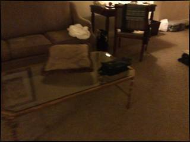
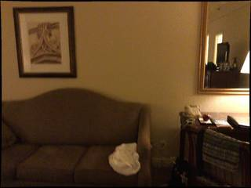
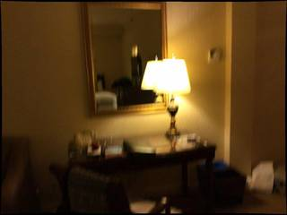
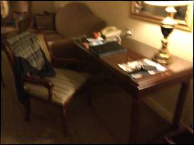
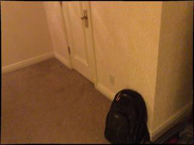
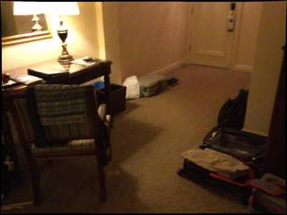
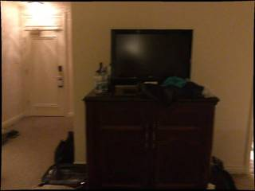
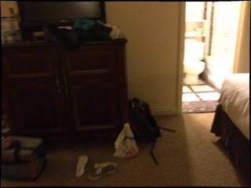
=== Step 0 Execution Feedback === [SUCCESS] Code executed in 19.12s. [Output] [VLM Q | thinking] In which frames are the following objects visible? Please provide the frame indices (0-9). 1. Desk 2. Television 3. Toilet [VLM A | thinking] 1. Desk: 0, 1, 2, 3, 4, 7 2. Television: 8, 9 3. Toilet: 9 1. Desk: 0, 1, 2, 3, 4, 7 2. Television: 8, 9 3. Toilet: 9 [Variables] New/changed: question: str answer: str [Inline Images] 10 image(s) attached below. Labels: InputImages [Tool Calls] 1 tool/VLM call(s) this step. [show() budget] 240/250 images remaining.
# 1. 3D Reconstruction recon = tools.Reconstruct.Reconstruct(InputImages) # 2. Segmentation # Desk in frame 4 seg_desk = tools.SAM3.segment_image_by_text(InputImages[4], "desk") # Television in frame 8 seg_tv = tools.SAM3.segment_image_by_text(InputImages[8], "television") # Toilet in frame 9 seg_toilet = tools.SAM3.segment_image_by_text(InputImages[9], "toilet") # Verification of masks # Desk fi_desk = seg_desk.frame_indices[0] mask_desk = seg_desk.get_mask(frame=fi_desk, object=0) print(f"Desk mask area: {mask_desk.sum()} pixels") # TV fi_tv = seg_tv.frame_indices[0] mask_tv = seg_tv.get_mask(frame=fi_tv, object=0) print(f"TV mask area: {mask_tv.sum()} pixels") # Toilet fi_toilet = seg_toilet.frame_indices[0] mask_toilet = seg_toilet.get_mask(frame=fi_toilet, object=0) print(f"Toilet mask area: {mask_toilet.sum()} pixels") # Visual verification show([ seg_desk.visualize(fi_desk), seg_tv.visualize(fi_tv), seg_toilet.visualize(fi_toilet) ])
Desk mask area: 55902 pixels TV mask area: 37623 pixels Toilet mask area: 6683 pixels [image: show_0002]
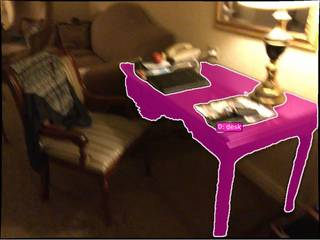
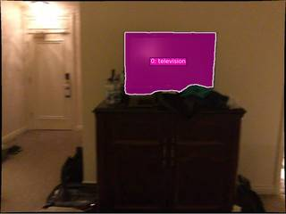
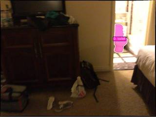
=== Step 1 Execution Feedback ===
[SUCCESS] Code executed in 7.49s.
[Output]
Desk mask area: 55902 pixels
TV mask area: 37623 pixels
Toilet mask area: 6683 pixels
[Variables] New/changed:
recon: Reconstruction, frames=[0..9] (10 frames)
seg_desk: PerFrameMask, frames=[4]
seg_tv: PerFrameMask, frames=[8]
seg_toilet: PerFrameMask, frames=[9]
fi_desk: int
mask_desk: ndarray, shape=(576, 768), dtype=bool
fi_tv: int
mask_tv: ndarray, shape=(576, 768), dtype=bool
fi_toilet: int
mask_toilet: ndarray, shape=(576, 768), dtype=bool
[Inline Images] 3 image(s) attached below.
Labels: [
seg_desk.visualize(fi_desk),
seg_tv.visualize(fi_tv),
seg_toilet.visualize(fi_toilet)
]
[Tool Calls] 4 tool/VLM call(s) this step.
[show() budget] 237/250 images remaining.# 1. Extract 3D centroids p_desk = seg_desk.get_centroid_3d(recon, frame=fi_desk, object=0) p_tv = seg_tv.get_centroid_3d(recon, frame=fi_tv, object=0) p_toilet = seg_toilet.get_centroid_3d(recon, frame=fi_toilet, object=0) print(f"Desk centroid: {p_desk}") print(f"TV centroid: {p_tv}") print(f"Toilet centroid: {p_toilet}") # 2. Relative direction computation # Forward vector: Desk -> TV v_fwd = p_tv - p_desk v_fwd = v_fwd / np.linalg.norm(v_fwd) # World Up vector v_up = np.array([0, 1, 0]) # Right vector: Forward x Up v_right = np.cross(v_fwd, v_up) v_right = v_right / np.linalg.norm(v_right) # Target vector: Desk -> Toilet v_target = p_toilet - p_desk # Projections proj_fwd = np.dot(v_target, v_fwd) proj_right = np.dot(v_target, v_right) print(f"Projection Forward: {proj_fwd:.3f}") print(f"Projection Right: {proj_right:.3f}") # 3. Determine direction label if proj_fwd > 0: direction = "front" else: if proj_right > 0: direction = "back-right" elif proj_right < 0: direction = "back-left" else: direction = "back" print(f"Calculated direction: {direction}") # 4. Visual Verification with BEV # Combine masks for BEV rendering # Since we have separate PerFrameMask objects, we can't easily combine them into one # without creating a new one or passing them as a list/array. # Let's create a combined mask array for the reference frame. ref_fi = recon.frame_indices[0] # We can just pass the individual masks to render_bev if we wrap them. # Actually, the simplest is to use the labels and masks. # Let's just use the centroids to plot manually if needed, # but let's try to use the provided render_bev. # Create a combined mask structure for BEV # We need masks for a range of frames. Let's just use the ones we have. # The render_bev expects (N, N_obj, H, W) or PerFrameMask. # Let's just manually check the centroids on a BEV of egomotion or similar. # Or just trust the math if centroids are clean. # To be safe, let's render a BEV with just the masks we have. # We'll create a simple array for one frame to see relative positions. # Since the objects are in different frames, we can't easily put them in one 2D mask. # But we can just plot the 3D centroids on a 2D plot (X-Z plane). plt.figure(figsize=(6, 6)) plt.scatter(p_desk[0], p_desk[2], color='blue', label='Desk') plt.scatter(p_tv[0], p_tv[2], color='red', label='TV') plt.scatter(p_toilet[0], p_toilet[2], color='green', label='Toilet') plt.xlabel('World X') plt.ylabel('World Z') plt.title('Top-down view (X-Z plane)') plt.legend() plt.grid(True) plt.axis('equal') plt.show()
Desk centroid: [ 0.5674441 1.7442945 -3.476451 ] TV centroid: [ 2.2806118 1.475707 -1.7709688] Toilet centroid: [ 4.4783 0.14239559 -1.932271 ] Projection Forward: 4.014 Projection Right: -1.665 Calculated direction: front [image: matplotlib figure] [image: Top-down view (X-Z plane)]
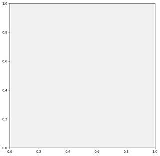
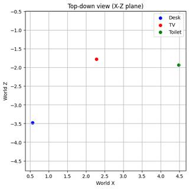
=== Step 2 Execution Feedback === [SUCCESS] Code executed in 0.52s. [Output] Desk centroid: [ 0.5674441 1.7442945 -3.476451 ] TV centroid: [ 2.2806118 1.475707 -1.7709688] Toilet centroid: [ 4.4783 0.14239559 -1.932271 ] Projection Forward: 4.014 Projection Right: -1.665 Calculated direction: front [Variables] New/changed: p_desk: ndarray, shape=(3,), dtype=float32 p_tv: ndarray, shape=(3,), dtype=float32 p_toilet: ndarray, shape=(3,), dtype=float32 v_fwd: ndarray, shape=(3,), dtype=float32 v_up: ndarray, shape=(3,), dtype=int64 v_right: ndarray, shape=(3,), dtype=float64 v_target: ndarray, shape=(3,), dtype=float32 proj_fwd: float32, shape=(), dtype=float32 proj_right: float64, shape=(), dtype=float64 direction: str ref_fi: int [Inline Images] 2 image(s) attached below. Labels: matplotlib figure, Top-down view (X-Z plane) [show() budget] 235/250 images remaining.
ReturnAnswer("C")
[ReturnAnswer] Answer submitted: C